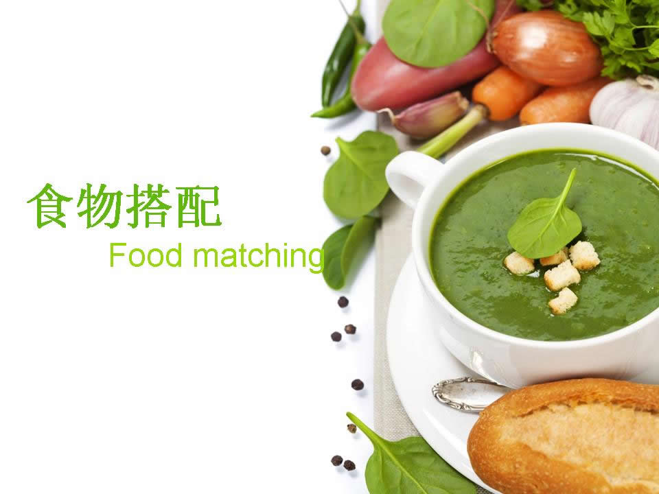

饮食营养
饮食营养：主要包括食物的消化与吸收、营养学基础知识、各类食物的营养、膳食结构和膳食指南、各类人群的膳食营养与营养配餐的原理及作用、食谱编制、膳食营养与疾病的关系、食品的污染与预防等。平衡膳食
平衡膳食的内容可概括为六个字：“全面、均衡、适度”。
所谓“全面”即指食物应多样化，食物种类越广泛越好。这是构成平衡膳食的基础。我们知道营养素划分为七大类，四十多个小类，而单靠一种或少数几种食物不能提供人体所需的全部营养素。
特别提示 :
第一类：谷薯类。如米、面、玉米、甘薯等，主要含有碳水化合物、蛋白质和B族维生素，是人体最经济的能量来源。 第二类：蔬菜水果类。富含维生素、矿物质及膳食纤维。
第三类：动物性食物。如肉、蛋、鱼、禽、奶等，主要为人体提供蛋白质、脂肪和矿物质。 第四类：大豆及其制品。如豆腐、豆腐干等，含有丰富的蛋白质，无机盐和维生素。
第五类：纯能量食物。如糖、酒、油脂等，能够为人体提供能量
。 每日选用五大类食物，保证约30种不同的食物。
所谓“均衡”，是指各种食物数量间的比例应合理，即应达到最接近人体吸收并可维持生理健康的模式。 所谓“适度”，是指各种食物的摄入量要与人体的需要相吻合。过多或过少都会影响人体的健康健康大餐“3+3”即指3顿正餐——早餐、午餐、晚餐和3顿加餐——上午餐、下午餐和睡前餐。
切记搭配
我们也知道，很多的食物不能混吃的，但是不可能都记得那么清楚，我整理里了这么几条的食物相克的搭配，希望在大家的生活当中能有所帮助：
西红柿+白酒：一起吃的话，会感觉胸闷和气短的；
猪肉+豆类：会造成腹胀、气壅、气滞；
猪肉+鸭梨：对肾不好；
西红柿+地瓜：一起食用会得结石病、呕吐、腹痛、腹泻；
菠菜+豆腐：菠菜中的草酸与豆腐中的钙会形成草酸钙，使人体的钙无法吸收；
鸡肉+芝麻：此搭配严重者会导致死亡，切记；
兔肉+小白菜：容易引起腹泻和呕吐；
土豆+香蕉：面部会生斑哦；
咖啡+香烟：容易导致胰腺癌；
洋葱+蜂蜜：同食会伤眼睛的，引起眼睛不适，严重会失明，切记；
驴肉+金针蘑：同食会引起心痛，严重会致命，切记；
葱+豆腐：形成草酸钙，造成了对钙的吸收困难，导致人体内钙质的缺乏；
糖精+蛋清：同吃会中毒，严重会导致死亡，切记；
梨+开水：吃梨喝开水，必致腹泻；
鲤鱼+咸菜：可引起消化道癌肿。
.........

部分最佳搭配食物
我们每天吃的食物品种繁多，但如何把食物搭配得当，吃出健康，这是人们最最关心的问题。
食物界中最健康组合推荐:
1.鱼+豆腐作用：味鲜， 补钙，可预防多种骨病，如儿童佝偻病、骨质疏松症等。
2.猪肝+菠菜作用：防治贫血。
3.羊肉+生姜作用：冬令补虚佳品， 可治腰背冷痛、四肢风湿疼痛等。
4.鸡肉+栗子作用：补血养身， 适于贫血之人。
5.鸭肉+山药作用：补阴养肺， 适于体质虚弱者。
6.瘦肉+大蒜作用：促进血液循环， 消除身体疲劳、增强体质。
7.鸡蛋+百合作用：滋阴润燥， 清心安神。
8.芝麻+海带作用：美容， 防衰老。
9.豆腐+萝卜作用：有利消化。
10.红葡萄酒+花生作用：有益心脏。
.........